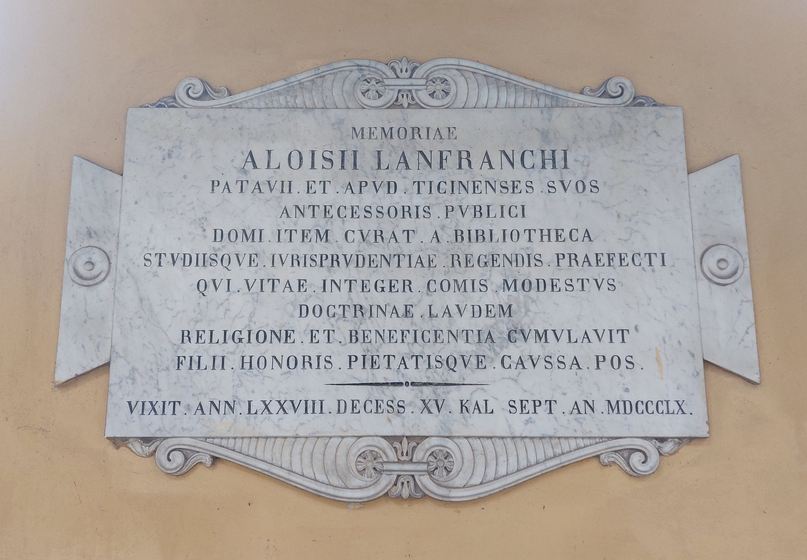

Ruolo: Giurista e Professore di Diritto Civile (1782-1860)

"Alla memoria di Luigi Lanfranchi, nativo di Padova e professore pubblico presso i suoi Pavesi, allo stesso modo in patria curatore della biblioteca e prefetto alla guida degli studi di giurisprudenza. Il quale, integro nella vita, affabile e modesto, accrebbe il prestigio della sua dottrina con la religione e la beneficenza. I figli posero (questa lapide) per onore e devozione. Visse 78 anni. Morì il quindicesimo giorno prima delle Calende di settembre dell'anno 1860."
"To the memory of Luigi Lanfranchi, native of Padova and public professor among the inhabitants of Pavia, likewise at home curator of the library and prefect in charge of the studies of jurisprudence. He was a man blameless in file, affable and modest, who enhanced the prestige of his doctrine with religion and charity. His sons placed (this headstone) for the sake of honor and devotion. He lived 78 years. He died on the fifteenth day before the Kalends of September in the year 1860. "